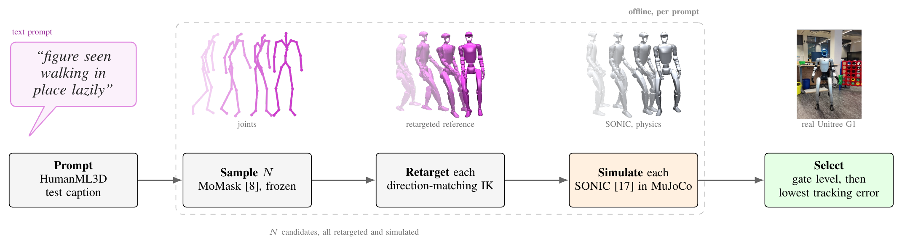
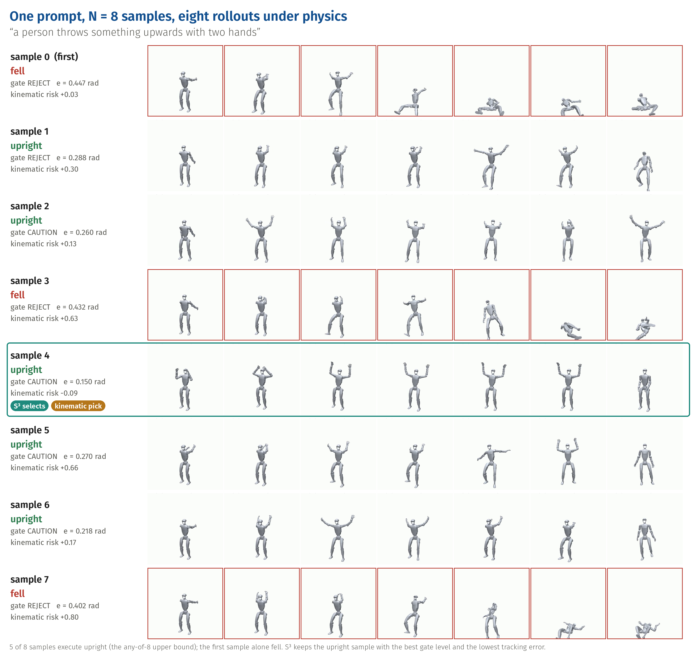
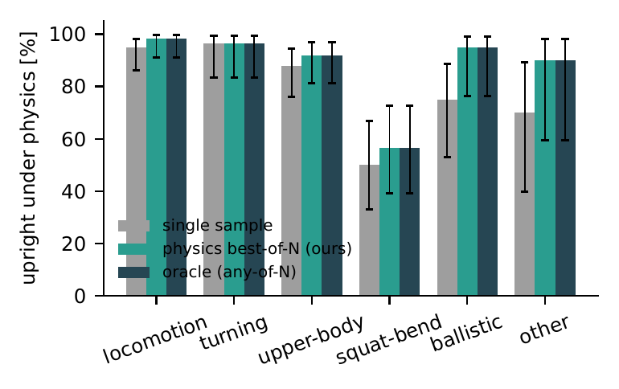
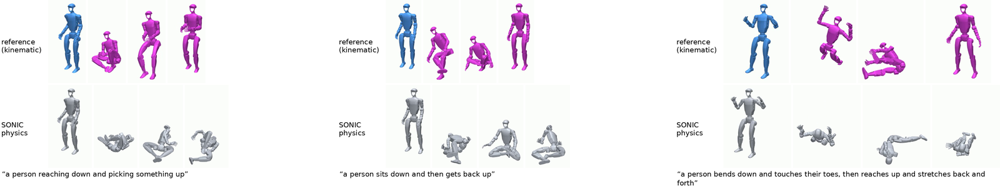

Sample, Simulate, SelectPhysics-in-the-Loop Text-to-Motion for Humanoids Without Training
Draw N motions from a frozen text-to-motion model, simulate all of them with the whole-body policy that runs on the robot, keep the one it executed best.
Raphael Memmesheimer · Sven Behnke
Autonomous Intelligent Systems, University of Bonn, Germany
“this person waves forward with his right hand” — generated joints, retargeted G1 reference, and the G1 tracked by the pretrained SONIC policy under physics. This clip was later executed on the real G1.
Video
Abstract
Text-to-motion models generate plausible human motion but do not model a robot's dynamics; whole-body tracking controllers execute robot references reliably but cannot replan an infeasible one. Recent language-to-humanoid systems bridge this gap by training. We measure how much of the gap closes with no training at all, by putting the deployment controller itself in the loop. Sample-simulate-select (S³) draws N motions per prompt from a frozen text-to-motion model (MoMask), retargets each to a Unitree G1 by direction-matching inverse kinematics, rolls all of them out under full rigid-body dynamics with the pretrained SONIC tracking policy, and keeps the candidate the policy executed best. Because the verifier is the deterministic simulator itself, S³ attains the any-of-N ceiling by construction; what we measure is where that ceiling lies and what falls short of it.
On 200 stratified HumanML3D test prompts with N = 8, upright execution rises from 83.5% to 89.5% and hardware-gate passes from 33 to 85; on the complete test split (4,184 prompts, 33,472 rollouts) it rises from 80.5% to 89.5%. A kinematic verifier that predicts falls well (AUROC 0.90) recovers only a quarter of this gain: ranking a prompt's own candidates is harder than classifying the population. What selection cannot fix is one class, prompts that lower the pelvis, which a generator trained on retargeted robot data does execute. We further score the semantic fidelity of the executed motion with the standard text–motion evaluator, with a real-mocap control that attributes the loss to the robot projection, ablate the retargeter against GMR (complementary failures: the any-of-8 ceiling rises to 95.0% over both), and execute all 177 gate-selected clips on the real G1: every one completes standing, with hardware tracking error matching simulation (0.114 vs 0.115 rad, r = 0.94).
How it works

Per prompt, N candidates are sampled from a frozen text-to-motion model, retargeted to the Unitree G1, rolled out under physics with the pretrained policy that also runs on the hardware, and the one it executed best is selected, screened and batched into robot sessions. Top: one result in the three representations the chain passes through, four instants overlaid, next to a real-robot take. Nothing is trained.

One prompt, eight samples: three fall, five execute upright, S³ selects the upright sample with the lowest tracking error. The first sample alone would have fallen.
Interactive: watch S³ choose
All eight samples of a prompt, each with six instants of its physics rollout and the outcome. Pick a prompt or shuffle; the highlighted card is what S³ sends to the robot, the amber tag what a kinematic verifier would have picked.
How many samples does selection need?
Drag N: the curves are recomputed from the 1,600 rollouts. The physics verifier lies on the any-of-N upper bound at every N; the kinematic verifier does not improve with N.
What we found
83.5 → 89.5 %
prompts executed upright, 200 HumanML3D test prompts, N = 8 — the any-of-8 ceiling
80.5 → 89.5 %
complete HumanML3D test split, 4,184 prompts, 33,472 rollouts
85.0 %
with a kinematic verifier (AUROC 0.90) instead of the rollout: a quarter of the improvement
177 / 177
gate-selected clips completed standing on the real G1
Selection realises the ceiling.With the deterministic rollout as verifier, best-of-8 picks an upright sample whenever one exists, by construction, at a few CPU-seconds per candidate. What we measure is where that ceiling lies: 89.5 % at N = 8.
Predicting falls is not ranking candidates.A kinematic risk score separates fallen from upright samples well, but the eight candidates of one prompt share its semantics, so the score barely orders them.
One class stays out of reach.Prompts that lower the pelvis — sit, kneel, deep bend — fall in every sample. A second retargeter recovers some of them, but 10 of 200 stay out of reach under both: motion the frozen generator never produces executably.
Meaning is lost at the robot, not in selection.Scored with the HumanML3D text–motion evaluator, S³'s picks match first samples at every stage; real mocap loses as much through the same retargeting and execution.
Two retargeters fail on different prompts.Direction-matching IK tracks tighter on locomotion, GMR keeps the pelvis higher on squat/bend and ballistic prompts; the any-of-8 ceiling over both reaches 95.0 % (91.0 % from a single sample each).
Simulation predicts the hardware.Tracking error on the robot 0.114 rad vs 0.115 rad in simulation (r = 0.94), and the simulated pelvis tilt predicts which clips wobble on the G1 (AUROC 0.94).

Per behaviour category: selection closes the gap everywhere except squat/bend.

The unrecoverable class: the reference bends or kneels, the policy follows it to the floor.
Result videos
Generated skeleton, retargeted G1 reference and the G1 under physics, synchronised. Verdicts are the hardware gate's.
Executed on the real robot
21 clips from the two recording sessions, with a fourth tile: the execution measured on the robot, replayed from its controller logs.
Real-robot deployment
Real G1: one take full-frame (“someone walking stands and begins to move shoulders and arms”), then nine, then a wider selection of takes, all at once.
For safety, every clip was first executed on a gantry that would arrest a fall; clips that completed cleanly there were afterwards re-executed without the gantry, in a second pass over a subset.
177 / 177
clips completed with the robot standing — no fall, no abort
23
sessions of eight clips, lowest risk first, two days
0.114 vs 0.115 rad
tracking error on the robot vs in simulation, r = 0.94
21
clips judged unstable — all recovered; the rollout had flagged them (tilt 14° vs 8°)
Every trial: simulation vs robot
Each point is one executed clip. Hover a point to see the real-robot footage and its numbers; ringed points have footage.
hover a point
Citation
@article{memmesheimer2026sss,
title = {Sample, Simulate, Select: Physics-in-the-Loop Text-to-Motion
for Humanoids Without Training},
author = {Memmesheimer, Raphael and Behnke, Sven},
journal = {arXiv preprint},
year = {2026}
}